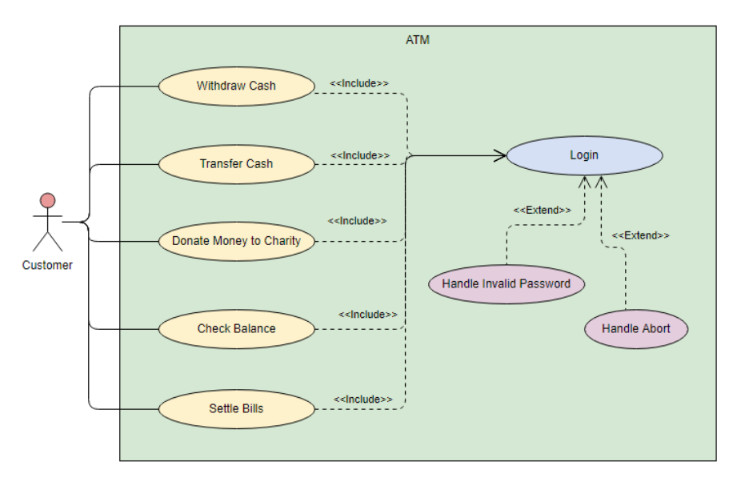
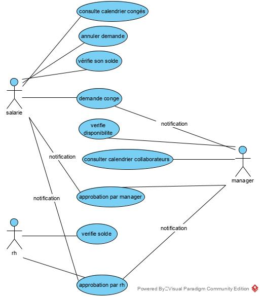

Objectifs de la leçon
Savoir lire et rédiger un modèle des fonctions
Introduction
L'analyse des fonctions ou analyse des besoins consiste à spécifier ce que l'application doit faire.
C'est le modèle le plus important de l'analyse fonctionnelle, car si les modèles du domaine et des processus sont importants, ils ne décrivent pas réellement l'application mais plutôt son environnement. Ce n'est pas le cas du modèle des fonctions qui, pour l'essentiel, liste les fonctions de l'application et les acteurs (utilisateurs ou systèmes interragissant avec l'application).
De nos jours, il existe 4 manières de modéliser les fonctions:
- avec des use cases
- avec des user stories
- par du texte
- via les interfaces utilisateurs
use cases
La modélisation avec des use cases est la méthode traditionnelle de l'IT. Mis au point dans les années 90, elle est centrale à la méthode UP (Unified Process).

{kind=link}
Voici un autre exemple, réaliser pour application de demande de congés:
{kind=link}
Pour plus d'information, voir les notes de Laurent Audiber ou les notes du cours.
user stories
Les user stories sont très utilisés avec les méthodes agiles, SCRUM ou eXtreme programming.
Elles ont le même rôle que les use cases.
Les "histoires utilisateurs" (user stories) sont une autre manière de capturer les besoins des utilisateurs et les fonctionnalités à implémenter.
Une user story décrit une fonctionnalité qui a de la valeur pour un utilisateur ou pour l'acheteur du système ou du logiciel. Les user stories ont trois aspects:
- une description de l'histoire, utilisée pour planifier le travail et pour se souvenir de la fonctionnalité
- des conversions sur l'histoire qui nous incitent à analyser en détail l'histoire
- des tests qui documentent les détails et qui peuvent être utilisé pour déterminer quand une histoire est complètement implémentée
Ces trois points sont souvent nommés les 3 C:
- Card (l'histoire est souvent décrite sur une carte et celle-ci collée à un mur)
- Conversations
- Confirmation
Voir par exemple Comment bien rédiger ses users stories dans scrum?
Finissons par l'acronyme INVEST, qui est un mnémonique pour les valeurs des user stories:
- Independent : doivent être le plus indépendante les unes des autres (idéalement, elles doivent pouvoir être mise en production sans dépendre d'autres user stories)
- Negotiable : capturons seulement le principal du besoin utilisateur et laissons de la place pour la conversation, la négociation, les user stories ne sont pas des contrats
- Valuable : la story doit produire de la valeur pour l'utilisateur
- Estimable : il doit être possible d'estimer l'effort nécessaire pour implémenter, tester, metttre en production la story
- Small : la story doit être suffisemment petite, afin d'être implémentable rapidement, quelques heures à quelques jours (ce n'est bien sur pas toujours possible)
- Testable : la story doit être testable et nous parlerons de critères d'acceptation (acceptance criteria)
texte
La description des fonctionnalités d'une application par du texte sont courantes mais cette approche présente beaucoup de défaut:
- comment organiser son texte? ou chaque analyse suit un schéma différent et donc comment retrouver rapidement l'information?
- long à lire
- grand risque d'incohérence
- grand risque de répétition
Bref, à éviter.
ui
La description des fonctions d'un logiciel à partir des interfaces utilisateurs est peut être très efficace car tout le monde comprend c'est qu'est une interface utilisateur et cela permet de penser concrêtement, devant un dessin de l'interface utilisateur.
Cependant, la méthode présente des difficultés:
- nous devons résoudre deux problèmes à la fois: la fonction et l'interface utilisateur
- nous risquons de nous perdre dans des détails de l'interface utilisateur, comme la couleur, la position exacte d'un bouton, une police de caractères et oublier la vue d'ensemble.
- il est malgré tout important de lister les use cases/user stories car il permettent d'organiser l'application.
Nous pouvons approfondir ces réflexions en lisant Sébastien Gaudin, mariage entre User Stories et Wireframs.
Références: